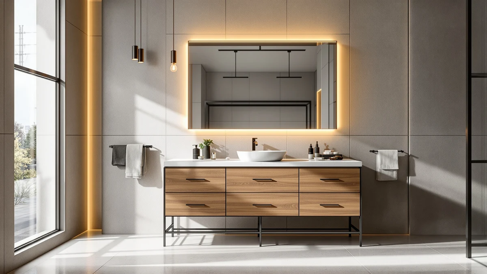

The Best 72-Inch Bathroom Vanities of 2026: Double Sink Picks
Prices and picks verified as of August 2026. Independent, reader-supported reviews.


Quick Answer
The best 72-inch bathroom vanities in this comparison range from $497.78 to $1,689.00, and all eight pair a double-sink footprint with MDF and engineered wood construction, except the diatomaceous-earth-topped XWNE. For most primary bathrooms, the Design House Concord 72 Inch is the strongest starting point: it carries the lowest price in the group and holds to the same 72-inch footprint as vanities costing three times as much.
Our pick: Design House Concord 72 Inch at $497.78 Check Price on Amazon
Bottom line: our top pick is the Design House Concord 72 Inch Bathroom Vanity at $497.78. The best budget option is the DKB Alenza 72 Inch Bathroom Vanity Double Sink at $1.
Things to Know Before You Buy
- Price spans $497.78 to $1,689.00 across these eight vanities. The split falls roughly between a sub-$650 tier and a $1,200-plus tier that adds finish and hardware detail rather than a different footprint.
- Seven of the eight use MDF and engineered wood construction. Only the XWNE Dark Walnut lists a diatomaceous earth top, so check the specs table if the counter material matters to you.
- Drawer count varies by listing. SOFTSEA is the only vanity here with an exact published number, eight drawers, so compare listings closely if in-vanity storage is a priority.
- DKB Alenza is the only listing with full published dimensions. Its 73-inch wide by 22-inch deep by 36-inch tall footprint is worth checking against your rough-in before you order any 72-inch vanity.
- A 72-inch vanity needs roughly six feet of clear wall space. Add clearance on either side for drawers and doors to open before you commit to a finish.
Finding the best 72-inch bathroom vanities comes down to matching a wide double-sink footprint to a bathroom that can actually fit it, and the eight vanities in this guide cover that width at prices from $497.78 to $1,689.00. All eight hold to the same 72-inch nominal width, so the real differences between them come down to construction material, finish, drawer count and published dimensions rather than the basic size.
We compared these eight vanities on price, listed materials and the specifications each manufacturer publishes, rather than ranking them by a numeric score. The Design House Concord 72 Inch is our starting recommendation because it sits at the bottom of the price range without dropping the MDF and engineered wood construction that seven of the eight vanities here share. If your bathroom calls for a specific finish or a documented drawer count, the picks further down this guide cover those cases directly.
Seven of these eight vanities list MDF and engineered wood as their core material, which keeps the comparison mostly about price, finish and hardware rather than a mix of build qualities. The XWNE Dark Walnut breaks that pattern with a diatomaceous earth top, and the DKB Alenza is the only listing with a full set of published dimensions. Below, we walk through why we picked each of these eight, how we compared them, and where each one fits into a 72-inch double-sink renovation.
Why You Should Trust Us
Best Bathroom Vanities covers one category of home fixture: the cabinets, countertops and sinks that make up a bathroom vanity. Ilane Tall has spent the past several years comparing vanity listings across price tiers, checking how published dimensions and materials hold up once you line several products up side by side. For this guide on the best 72-inch bathroom vanities, we pulled pricing and specification data directly from each listing and cross-referenced material claims against what the manufacturer states in the product specifications. We don't run a paid testing lab and we don't invent expert quotes. We read the same listings you can, compare the numbers, and tell you where the value actually is.
How We Picked
We started with one requirement: every vanity had to be listed at 72 inches wide, since a narrower or wider unit changes the double-sink layout math this guide is built around. From there we compared listed prices, from $497.78 to $1,689.00, to make sure the lineup covered a genuine spread of budgets rather than clustering at one price point. We required a stated core material for every listing, MDF and engineered wood for seven of the eight and diatomaceous earth for the XWNE, so that price differences reflect finish and features rather than an unclear mix of build quality. We noted which listings publish extra detail, like the DKB Alenza's full dimensions or the SOFTSEA's eight-drawer count, since that level of documentation matters when you're planning around a fixed wall space. We excluded listings that didn't confirm a 72-inch width in the product title or specifications, since a vanity a few inches off that mark changes the room-fit calculation this guide is meant to answer.
How We Compared
Comparing a 72-inch vanity before it ships to your bathroom means comparing the published numbers, not a finished product in a showroom. For each vanity, we checked the listed price against the group average to see where it lands on the budget-to-premium scale, then checked the stated material against the other seven listings to confirm whether it matches the MDF and engineered wood standard or breaks from it, as the XWNE does. Where a listing published full dimensions or a drawer count, like the DKB Alenza or the SOFTSEA, we noted that as a point of differentiation, since two vanities at a similar price don't compare evenly if one gives you more documented information to plan around. We also checked each listing's published customer rating, which sits at four stars across all eight vanities in this comparison, as a baseline alongside the price and material comparison, though a shared star rating is a starting point and not a substitute for lining up price, material and documented dimensions side by side.
Our Picks

Design House Concord 72 Inch
What we like
- At $497.78, it's the lowest price of the eight 72-inch vanities in this comparison
- Uses the same MDF and engineered wood construction as most of the other vanities here, so you're not trading material quality for the lower price
- Sticks to the standard 72-inch footprint, so it drops into the same wall space as vanities costing over $1,000 more
Flaws but not dealbreakers
- The listing doesn't publish full dimensions the way the DKB Alenza does, so double-check width, depth and height before ordering
- No drawer count is listed, so buyers who need documented storage capacity should compare against the SOFTSEA's published eight drawers
| Material | MDF / engineered wood |
| Size | 72 in. |
The Design House Concord 72 Inch is the clearest budget argument in this comparison. At $497.78, it undercuts every other vanity here, including the next-closest Mirightone by $7.21, while matching the MDF and engineered wood construction that most of the other vanities in this guide also use. For a 72-inch double-sink renovation where the wall space and rough-in are already set, that combination of low price and standard-tier material is hard to beat on paper.
Because the listing doesn't publish the level of dimensional or storage detail that some of the pricier options do, buyers weighing the Concord against the DKB Alenza's full 73 by 22 by 36 inch spec sheet or the SOFTSEA's eight-drawer count should confirm those specifics directly with the seller before ordering. That gap in published detail, not the price or the material, is the main tradeoff of choosing the least expensive vanity in this lineup.

DKB Alenza 72 Inch Bathroom
What we like
- Publishes full dimensions, 73 inches wide by 22 inches deep by 36 inches tall, more specification detail than any other listing in this comparison
- Uses the same MDF and engineered wood construction as the majority of vanities in this guide
- The 73-inch actual width gives a small margin over a strict 72-inch wall opening, which can help cover minor installation gaps
Flaws but not dealbreakers
- At $1,249.00, it costs $751.22 more than the Design House Concord, the lowest-priced vanity in this comparison
- The 73-inch width means it needs slightly more wall space than the other seven vanities listed at 72 inches, so measure carefully if your space is tight
| Material | MDF / engineered wood |
| Size | 73" W x 22" D x 36" H |
The DKB Alenza 72 Inch Bathroom stands out in this comparison for one reason: it's the only listing that publishes a complete set of dimensions, 73 inches wide, 22 inches deep and 36 inches tall. For buyers planning around an exact rough-in, that level of documented detail removes the guesswork that comes with vanities listing only a nominal width.
That documentation comes at a price. At $1,249.00, the Alenza sits in the middle of this lineup's cost range, more than double the Design House Concord and the Mirightone, though still well under the ARIEL Hepburn's $1,689.00. The extra inch of actual width, 73 inches instead of a strict 72, is worth checking against your wall opening before you order, since it can either cover a slightly wider gap or create a tight fit if your space is measured to the inch.

SOFTSEA 72 Inch Double Sink
What we like
- Lists eight drawers in the specifications, the only vanity in this comparison with a documented drawer count
- Priced at $619.99, in the lower half of this eight-vanity price range
- Built from MDF and engineered wood, consistent with the majority of vanities in this comparison
Flaws but not dealbreakers
- At $619.99, it costs $122.21 more than the Design House Concord, the least expensive option here
- The listing doesn't publish full width, depth and height figures the way the DKB Alenza does, so drawer count is the main documented differentiator
| Material | MDF / engineered wood |
| Size | 72" (8 Drawers) |
The SOFTSEA 72 Inch Double Sink is the storage-focused pick in this comparison. Its specifications list eight drawers, the only vanity among these eight to publish an exact drawer count, which matters if in-vanity storage is a bigger priority than shaving the last few dollars off the price.
At $619.99, the SOFTSEA sits closer to the budget end of this lineup than the middle, roughly $122 above the Design House Concord but well under four-figure vanities like the DKB Alenza or ARIEL Hepburn. It shares the same MDF and engineered wood construction as most of the other picks here, so the eight-drawer count is the clearest reason to choose it over a similarly priced alternative like the Vanity Art.

Vanity Art 72 Inch Bathroom
What we like
- Priced at $638.99, in the lower half of this comparison's price range
- MDF and engineered wood construction matches the majority of the eight vanities in this guide
- Straightforward 72-inch listing without extra sizing variations to account for
Flaws but not dealbreakers
- At $638.99, it's the second-priciest of the four sub-$650 vanities in this comparison, slightly above the SOFTSEA
- No drawer count or full dimension set is published, so buyers should compare against the SOFTSEA and DKB Alenza listings for that level of detail
| Material | MDF / engineered wood |
| Size | 72" |
The Vanity Art 72 Inch Bathroom is a middle-of-the-pack choice among the four vanities priced under $650 in this comparison. At $638.99, it lands slightly above the SOFTSEA and well above the Design House Concord and Mirightone, without a documented feature, like the SOFTSEA's eight drawers or the DKB Alenza's full dimensions, to justify the gap on paper.
What it does offer is the same MDF and engineered wood construction shared by most of the other vanities in this guide, in a straightforward 72-inch listing. For buyers who already know their wall space fits a standard 72-inch footprint and don't need a published drawer count or dimension sheet to make the decision, the Vanity Art is a reasonable middle-price option.

XWNE 72-inch Dark Walnut Bathroom
What we like
- The only listing in this comparison with a diatomaceous earth top instead of MDF and engineered wood
- Dark walnut finish sets it apart visually from the other seven vanities in this guide, which lean toward standard finishes
- Sticks to the 72-inch nominal width shared by most of the other picks here
Flaws but not dealbreakers
- At $1,614.99, it's the second-most expensive vanity in this comparison, behind only the ARIEL Hepburn
- The diatomaceous earth top is a different material than every other vanity here, so it's worth confirming maintenance requirements before you buy, since it isn't the MDF and engineered wood standard the rest of this lineup uses
| Material | Diatomaceous earth |
| Size | 72 inch |
The XWNE 72-inch Dark Walnut Bathroom is the material outlier in this comparison. Every other vanity in this guide lists MDF and engineered wood construction; the XWNE is the only one built with a diatomaceous earth top, paired with a dark walnut finish that reads differently from the lighter, more standard finishes on the rest of this list.
That distinct material comes with a distinct price. At $1,614.99, the XWNE sits near the top of this eight-vanity comparison, more than three times the cost of the Design House Concord. If the diatomaceous earth top and dark walnut finish are specifically what you're after, the XWNE is the only listing here that delivers them; if not, the ARIEL Hepburn and Alphabath cover the same premium price tier with the more standard MDF and engineered wood build.

ARIEL Hepburn 72-inch Bathroom Vanity
What we like
- Specifications explicitly confirm a 72-inch double-sink configuration
- Built from MDF and engineered wood, the same standard construction as most of the other vanities here
- Sits at the top of this comparison's price range, which typically corresponds to more finish and hardware detail from the manufacturer
Flaws but not dealbreakers
- At $1,689.00, it's the single most expensive vanity in this eight-way comparison, $1,191.22 above the Design House Concord
- Beyond the confirmed double-sink spec, the listing doesn't publish the fuller dimension set the DKB Alenza does
| Material | MDF / engineered wood |
| Size | 72'' double sink |
The ARIEL Hepburn 72-inch Bathroom Vanity is the premium end of this comparison. At $1,689.00, it costs more than any other vanity in this eight-way lineup, edging out even the XWNE Dark Walnut by $74.01. Its specifications explicitly list a 72-inch double-sink configuration, which several of the other listings in this guide don't spell out as directly.
Construction-wise, the Hepburn sticks to the MDF and engineered wood standard shared by most of this lineup, so the price gap over budget picks like the Design House Concord reflects finish and brand positioning rather than a fundamentally different build material, the way the XWNE's diatomaceous earth top does. For buyers who've already decided to spend at the top of this range, the Hepburn's confirmed double-sink spec is a point in its favor over less explicit listings.

Alphabath 72 Inch Double Sink
What we like
- Specifications confirm a 72-inch double-sink layout
- MDF and engineered wood construction, consistent with the majority standard in this comparison
- At $1,559.99, it's less expensive than both the ARIEL Hepburn and the XWNE Dark Walnut, while sitting in the same upper price tier
Flaws but not dealbreakers
- At $1,559.99, it's still more than three times the price of the Design House Concord
- Doesn't publish a drawer count or full dimension set, unlike the SOFTSEA or DKB Alenza
| Material | MDF / engineered wood |
| Size | 72 Inch |
The Alphabath 72 Inch Double Sink slots into the upper price tier of this comparison without quite reaching the top. At $1,559.99, it costs $129.01 less than the ARIEL Hepburn and $55.00 less than the XWNE Dark Walnut, while still confirming the same 72-inch double-sink layout as those two pricier picks.
Like most of the vanities in this guide, the Alphabath lists MDF and engineered wood construction, so the case for choosing it over the Hepburn or XWNE comes down to saving a modest amount while staying in the same premium price bracket. It doesn't publish the drawer count or dimension detail that the SOFTSEA and DKB Alenza do, so buyers who need that level of documentation should compare those listings directly.

72" White Bathroom Vanity with
What we like
- At $504.99, it's the second-lowest price among the eight vanities in this comparison, slightly above the Design House Concord
- White finish stands out from the darker and more neutral finishes on most of the other listings here
- MDF and engineered wood construction, consistent with the majority of vanities in this guide
Flaws but not dealbreakers
- Only $7.21 separates it from the Design House Concord, so the white finish is the main reason to choose this over the cheaper pick
- No drawer count or full dimension set is published, similar to most of the vanities in this comparison outside the SOFTSEA and DKB Alenza
| Material | MDF / engineered wood |
| Size | 72" |
The Mirightone 72-inch White Bathroom Vanity is the closest competitor to the Design House Concord on price, at $504.99 versus $497.78, a gap of only $7.21. The deciding factor between the two comes down almost entirely to finish: the Mirightone's white finish stands out from the darker and more neutral finishes on most of the other seven vanities in this guide.
Construction is the same MDF and engineered wood standard used across most of this comparison, so buyers aren't trading material quality for the low price here. If a white 72-inch vanity is specifically what your bathroom calls for, the Mirightone delivers that finish for barely more than the least expensive option in this entire lineup.
Quick Comparison
| Product | Material | Price | Rating | Best for | Get it |
|---|---|---|---|---|---|
| Design House Concord 72 Inch | MDF / engineered wood | $497.78 | 4 | Best overall value | View on Amazon → |
| DKB Alenza 72 Inch Bathroom | MDF / engineered wood | $1,249.00 | 4 | Exact published dimensions | View on Amazon → |
| SOFTSEA 72 Inch Double Sink | MDF / engineered wood | $619.99 | 4 | Documented 8-drawer storage | View on Amazon → |
| Vanity Art 72 Inch Bathroom | MDF / engineered wood | $638.99 | 4 | Straightforward mid-price swap | View on Amazon → |
| XWNE 72-inch Dark Walnut Bathroom | Diatomaceous earth | $1,614.99 | 4 | Diatomaceous earth top | View on Amazon → |
| ARIEL Hepburn 72-inch Bathroom Vanity | MDF / engineered wood | $1,689.00 | 4 | Top-tier price, confirmed double sink | View on Amazon → |
| Alphabath 72 Inch Double Sink | MDF / engineered wood | $1,559.99 | 4 | Near-premium double sink | View on Amazon → |
| 72" White Bathroom Vanity with | MDF / engineered wood | $504.99 | 4 | White finish on a budget | View on Amazon → |
How much does a 72-inch bathroom vanity cost?
In this comparison, prices range from $497.78 for the Design House Concord 72 Inch to $1,689.00 for the ARIEL Hepburn 72-inch Bathroom Vanity.
Do all 72-inch vanities have double sinks?
Most 72-inch vanities are built as double-sink units, since the extra width is generally used to fit two basins rather than a single oversized one.
The Competition
The Mirightone 72-inch White Bathroom Vanity is the closest competitor to our top pick, the Design House Concord, with only $7.21 separating the two. Both share the same MDF and engineered wood construction, so the choice between them comes down to finish, a white cabinet on the Mirightone versus a more neutral option on the Concord.
The SOFTSEA and Vanity Art compete directly in the $600 to $650 range. The SOFTSEA's published eight-drawer count is the clearer differentiator, since the Vanity Art doesn't list a drawer count at all, and only about $19 separates the two prices.
Among the four vanities above $1,200, the DKB Alenza stands apart for publishing full dimensions, 73 inches wide by 22 inches deep by 36 inches tall, a level of detail the ARIEL Hepburn, Alphabath and XWNE Dark Walnut don't match at their respective price points.
The ARIEL Hepburn, Alphabath and XWNE Dark Walnut cluster within about $130 of each other at the top of this comparison. The XWNE's diatomaceous earth top is the one clear material difference among the three, since the Hepburn and Alphabath both stick to MDF and engineered wood.
Across all eight, the Design House Concord remains the strongest starting point for anyone shopping the best 72-inch bathroom vanities on a budget, while the DKB Alenza is the better choice if documented dimensions matter more than price.
Frequently Asked Questions
How much does a 72-inch bathroom vanity cost?
In this comparison, prices range from $497.78 for the Design House Concord 72 Inch to $1,689.00 for the ARIEL Hepburn 72-inch Bathroom Vanity. The split falls roughly between a sub-$650 tier, which includes the Design House Concord, Mirightone, SOFTSEA and Vanity Art, and a $1,200-plus tier that includes the DKB Alenza, Alphabath, XWNE Dark Walnut and ARIEL Hepburn.
Do all 72-inch vanities have double sinks?
Most 72-inch vanities are built as double-sink units, since the extra width is generally used to fit two basins rather than a single oversized one. Several listings in this comparison, including the SOFTSEA, Vanity Art and ARIEL Hepburn, confirm a double-sink configuration directly in their specifications, so check the individual listing if that confirmation matters for your renovation plan.
How much wall space does a 72-inch vanity need?
A 72-inch vanity needs roughly six feet of clear wall space at minimum, plus extra clearance on either side for doors and drawers to open fully. The DKB Alenza is the only vanity in this comparison with a fully published footprint, 73 inches wide by 22 inches deep, which is worth using as a reference point when measuring your own bathroom before ordering.